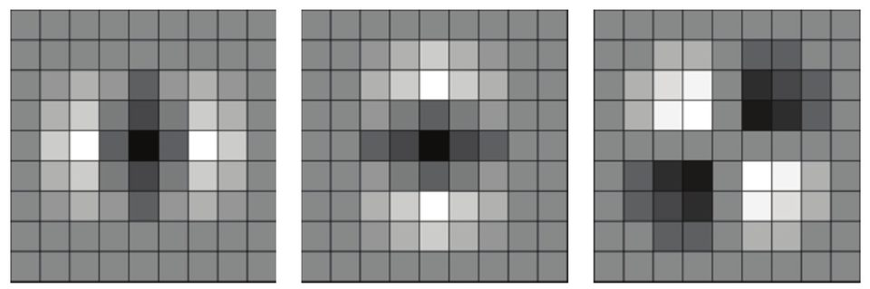

연구실적 · 국내전문학술지
SURF 기법을 활용한 위성 SAR 다중해상도 영상의 정합 및 기하보정
Matching and Geometric Correction of Multi-Resolution Satellite SAR Images Using SURF Technique

초록
위성 SAR 영상의 활용이 증가하면서 영상의 해석 및 융합을 위한 정밀 기하보정에 대한 필요성이 높아지고 있다. 특히 광역감시 목적으로 활용되기 위해 서로 다른 해상도를 갖는 SAR 영상간 정보융합도 활발해지고 있다. 일반적으로 SAR 영상의 기하보정은 위성의 궤도 및 자세정보를 활용하여 수행할 수 있지만 SAR 센서의 궤도 및 시스템 오차, 대상지형 특성에 의한 왜곡으로 인해 추가적인 보정이 필요하게 된다. SAR 영상을 통한 변화탐지나 타 영상과의 융합에 적용하기 위해서는 기하 오차 보정이 반드시 선행되어야 한다. 이를 위해 다수의 지상 기준점을 선정하고 이를 포함하는 기준 영상과 비교하여 원본 영상에서 대응점을 찾는 방식으로 정밀 기하보정을 수행할 수 있다. Speeded Up Robust Feature (SURF) 기법은 쉽고 빠르게 영상의 기준점을 찾을 수 있지만 상대적으로 해상도가 낮고 스펙클 잡음에 영향을 받는 SAR 영상에서는 활용하기가 어렵다고 알려져 있다. 본 논문에서는 SURF 기법을 위성 SAR 영상에 적용할 때 발생할 수 있는 오차를 추출하고 영상 특성에 따른 성능 변화를 분석하였다. SURF 알고리즘의 적용이 가능한 입력 변수의 적정 범위를 제시하고 그에 따른 영상 정합의 오차를 분석하여 중저해상도의 위성 SAR 영상에 대해서도 SURF 기법을 통한 기하 보정 및 영상 정합이 적용될 수 있음을 검증하였다.
사이트 원문 표기
김아름, 송정환, 강서리, 이우경, “SURF 기법을 활용한 위성 SAR 다중해상도 영상의 정합 및 기하보정”, 대한원격탐사학회지, 제30권 4호, 2014년 8월
BibTeX
@article{Kim_2014,
title={Matching and Geometric Correction of Multi-Resolution Satellite SAR Images Using SURF Technique},
volume={30},
ISSN={1225-6161},
url={http://dx.doi.org/10.7780/kjrs.2014.30.4.2},
DOI={10.7780/kjrs.2014.30.4.2},
number={4},
journal={Korean Journal of Remote Sensing},
publisher={The Korean Society of Remote Sensing},
author={Kim, Ah-Leum and Song, Jung-Hwan and Kang, Seo-Li and Lee, Woo-Kyung},
year={2014},
month=Aug,
pages={431–444}
}